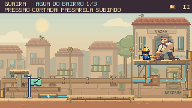
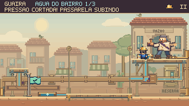
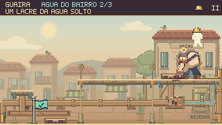
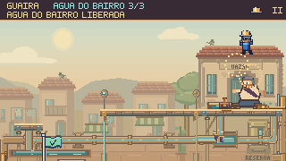
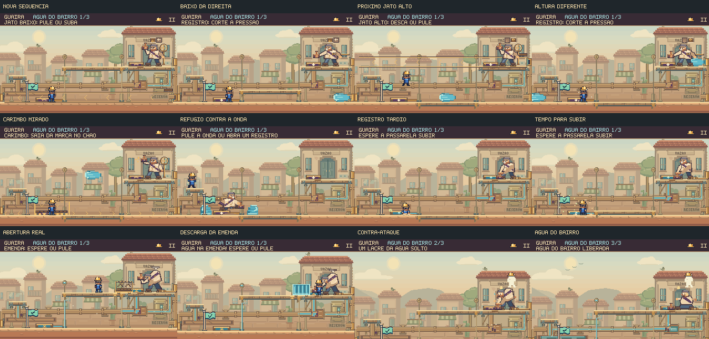

Mais ritmo no confronto com o Prefeito.
As tentativas seguintes variam a ordem dos jatos. Os registros respondem pela tubulação, o chefe reage à interrupção e cada lacre se rompe no mecanismo da arena. A subida tardia ganhou tempo real para um contra-ataque.
Cortar a pressão tem uma resposta visível
Partida de 20,92 s, gravada a 60 fps com comandos e física nativos, sem áudio. Feka interrompe as salvas pelo registro superior e pelo inferior; o corte cancela a sequência e abre uma oportunidade de ataque.
Reação do corpo, resposta da instalação


Um gesto com causa. O pulso parte do registro acionado, segue os tubos existentes e chega à caixa dos lacres. A pose de costas expostas entra assim que o acesso está pronto.
Contato com o cenário. No impacto, o tronco se comprime enquanto as botas ficam plantadas. A chave e o carimbo assentam sobre a superfície, sem atravessar o piso.


Esses detalhes acompanham o relógio da cena e respeitam a opção de movimento reduzido. A água perigosa conserva sua cor e seu contorno próprios.
Uma abertura perdida muda a próxima sequência
Nas duas últimas etapas, há três ordens de jatos. Se Feka perde a oportunidade de acertar o chefe, a próxima tentativa troca alturas e direções. Os pequenos sinais acima do Prefeito mostram a sequência na ordem de leitura, e cada disparo mantém seu aviso completo.
Este percurso de 44,33 s espera deliberadamente para perder uma abertura e acionar o registro perto do prazo. É uma prova da recuperação e da sequência alternativa; a espera não é obrigatória durante a partida.
Tempo para chegar. Uma ativação tardia válida considera a viagem real do elevador. Ao chegar, a abertura oferece pelo menos 2,4 s. Mesmo esperando a descarga da emenda terminar, sobra 1 s para agir.
Sem renovar a janela indefinidamente. Fechar e reabrir o registro não reinicia a contagem. Se a plataforma não chega dentro da tolerância, o chefe retoma o confronto.
Examinar doze momentos desse percurso

Conferência no jogo
Cinco percursos completos verificam balcão, espera, piso, interrupções e nova tentativa. Também foram conferidos o retorno ao mapa, o progresso do capítulo, a derrota e o reinício da luta.
As gravações são partidas ensaiadas. Elas demonstram funcionamento e alternativas viáveis; a descoberta das estratégias e o equilíbrio da dificuldade ainda precisam de avaliação com jogadores novos.
Resultados e arquivos verificados · Percursos completos · Navegador e controles · Reprodução